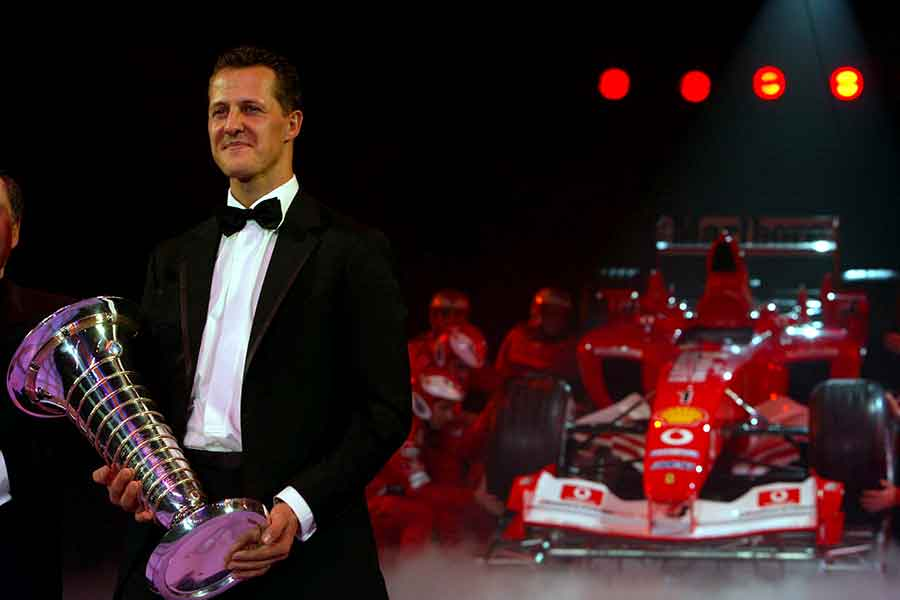

Technical specifications
Chassis: Carbon-fibre monocoque
Engine: Ford EC Zetec-R V8 produced by Cosworth, 3498cc, longitudinally mounted at 75 degrees
Transmission: Semi-automatic Benetton transverse 6-speed
Front suspension: Double wishbones, pushrod
Rear suspension: Double wishbones, pushrod
Wheelbase: 2880 mm
Front axle track: 1690 mm
Rear axle track: 1618 mm
Tires: Goodyear
Fuel: Elf
Weight: 515 kg
Benetton B195 - Double Formula 1 Champion in (1995).
The aerodynamics limitations introduced by FIA that year were the main trouble for the team. The balance of the car in the pre-season was very poor and many people were thinking that B195 wasn’t as good as the Williams FW17 which was powered by the same engine but looked more reliable than Benetton’s car.
However, Schumacher once again was battling against Damon Hill and again managed to end the season as a winner. Johnny Herbert was a good support to the German driver and played an important role in team’s effort to win the Constructors’ championship.
German driver recovered in front of his fans at Hockenheim where he won for the fifth time in 1995 while Herbert with the 4th place earned some valuable points for the team. Benetton was 18 points clear of Williams in the Constructors’ championship after the first half of the season, while Schumacher’s advantage to Hill was 21 points.
German driver confirmed his supremacy in the next three races, at Nurburgring, Okayama, and Suzuka. He won each race and in the Pacific Grand Prix at Okayama, he clinched the title after raising his advantage to 23 points. Herbert also did well in each race by scoring a lot of points. His 3rd place at Suzuka confirmed Constructors’ championship title for Benetton.
That car was the last one that won any title for Benetton team. In the meantime, Renault bought the team. Until 2002, Benetton cars scored only one race win, by Gerhard Berger in 1997, and that’s why Benetton B195 has a special place in the history.
Benetton B195 technical specifications
Chassis: Carbon fiber monocoque
Suspension (front and rear): Double wishbone, pushrod
Engine: Renault RS7, 67º V10, 3.000 cc, mid-engine, longitudinally mounted, naturally aspirated
Transmission: Transverse 6-speed semi-automatic
Wheelbase: 2.880 mm
Front track: 1.690 mm
Rear track: 1.618 mm
Brakes: Carbone industries with Brembo calipers
Electronics: Magnetti Marelli
Fuel: Elf
Tires: Goodyear
Ferrari F1-2000 - A Car That Won the Long-awaited Title & 3rd Title (2000)
The new car was quite different in comparison to the previous two models. While the gearbox, operated by paddles mounted behind the steering wheel remained literally the same, the engine was new. The most important change was that the gravity center of the car was lowered with a new engine which had a wider cylinder bank angle. The aerodynamics also was improved and brought almost at the level of McLaren. The Ferrari F1-2000 also features exhausts exiting at the top of the sidepods, ahead and between the rear wheels.
Everybody was pretty satisfied with the new car and the team officials Jean Todt , Ross Brawn, and Rory Byrne (who was a chief designer) were sure that success will come. Ferrari won the Constructors’ championship in 1999 but the main ambition was to win Drivers’ title after 21 years and Jody Scheckter’s triumph. Two-time champion Michael Schumacher was hungry for success, while Rubens Barrichello , who arrived as a replacement for Eddie Irvine, had to be a second fiddle in the red orchestra.
Ferrari F1-2000 had remarkable results – 10 wins out of 17 races. A total of 21 podiums were scored, as well as 10 pole positions (Schumacher 9, Barrichello 1) and 5 fastest laps (Schumacher 2, Barrichello 3).
Ferrari F1-2000 technical specifications
Length: 4.397 mm
Width: 1.795 mm
Height: 959 mm
Weight: 600 kg (including driver)
Chassis: Carbon-fibre and honeycomb composite monocoque
Front track: 1.490 mm
Rear track: 1.405 mm
Front suspension: Double wishbones, push-rod activated torsion arms
Rear suspension: Double wishbones, push-rod activated torsion arms
Engine: Ferrari Tipo 049 V10, 3.0 l, 2.997 cc, normally aspirated, mid-longitudinally at 90 degrees
Max power output: over 770 hp
Transmission: Ferrari 7-speed longitudinal semi-automatic sequential
Brakes: Carbon-fibre ventilated discs
Fuel: Shell
Tires: Bridgestone
Ferrari F2001 - Mighty Machine for the New Century & 4th title (2001).

The Ferrari F2001 was one of the best cars in the world. It won both Formula 1 World Championship titles in great style.
The F2001 model was more than worthy successor of F1-2000. The team of Ferrari designers did a great job creating this car around new regulation changes which demanded a higher-mounted front wing assembly to reduce downforce.
Mixture of the good old things and new approach
The Ferrari F2001 used many parts from its predecessors. The gearbox and internal layout were pretty the same like in F1-2000 but the aerodynamic efficiency was drastically improved. The suspension components and many elements including front wishbones and uprights have been manufactured using new methods. The new car was launched at Maranello on 29th of January, 2001 and debuted on the track the next day at Fiorano in the hands of Michael Schumacher.
Before the beginning of the season, they needed to make small changes on the cars because they were 2-3 seconds slower per lap than F1-2000. The hard work paid off and before the beginning of the season, the difference was just around 0.5s, mainly thanks to an overall reduction in weight which was achieved by using some innovative materials.
Ferrari F2001 won both Drivers’ and Constructors’ championship titles
When the season began, Ferrari F2001 immediately set the standards. Michael Schumacher won the opening two races in Australia and Malaysia. Later in the season, he added wins in Spain, Monaco, at European Grand Prix, and in France. By winning Hungarian Grand Prix, Schumacher clinched the title four rounds before the end of the season. After that, the German also won the races in Belgium and Japan and finished the season with a record number of points – 123.
Ferrari F2001 Technical specifications
Length: 4.460 mm
Length: 4.460 mm
Width: 1.796 mm
Height: 1.100 mm
Chassis: carbon -fiber and composite honeycomb
Kerb Weight (with water and oil): 600 kg
Front Track: 1.470 mm
Rear Track: 1.405 mm
Front Suspension: Independent, push-rod activated torsion springs
Rear Suspension: Independent, push-rod activated torsion springs
Transmission: Rear-wheel drive, longitudinal semi-automatic sequential electronically controlled gearbox, limited-slip differential, 7 gears + reverse
Brakes: Carbon on all four disks
Wheels: 13″ BBS (front and rear)
Tires: Bridgestone
Video – Ferrari F2001 onboard with Michael Schumacher
Ferrari F2002 dominant season & 5th record champion (2002)
Ferrari F2002 won both Drivers’ and Constructors’ Formula 1 World Championship titles and was one of the most dominant cars in the history of the series.
New car, same ambitions
Technical director Ross Brawn, chassis designer Rory Byrne, and engine designer Paolo Martinelli again did an excellent job creating the Ferrari F2002. It is much lighter than its predecessor, has a very low center of gravity, and it is easy to handle. The new engine probably isn’t the mightiest engine in the championship but it is perfectly packed – very compact, light, and fuel efficient.
This car wasn’t just modified and improved version of the previous F2001 model. The Ferrari F2002 was a completely new car with many new technologies that weren’t seen before. Visually, this car followed the Ferrari’s design principles but inside was completely redesigned, all with an aim to have even better performances than its predecessor.
New gearbox was the main change
The main change was a completely new gearbox which allowed great advancement when it comes to aerodynamic efficiency. Surprisingly, a new gearbox had such a big effect at a redesign that the car wasn’t ready for the start of the season, so the modified F2001 was used in the opening two rounds of the 2002 season.
The F2002 changed that part of exhaust history again, now pushing air out a little further away from the rear wing, but more importantly, backwards, and not upwards like in 2001. The exhaust pipe was covered with bodywork that also functioned as an air exit which enabled more efficient cooling in the side pods.
Schumacher was almost unstoppable
Schumacher easily won the following race in France and six races before the end of the season secured another title. The next race was in Germany and he scored another win but that wasn’t the end of the marvelous season for Ferrar
The last five rounds of the season were marked by a total dominance of Ferrari cars. The Brazilian was the winner in Hungary, Italy, and in the US, while the German driver triumphed in Belgium and Japan.
>Schumacher was crowned as a champion, with 144 points on his account, while Barrichello ended the season as a runner-up with 77 points. In the Constructors’ championship, Ferrari won the title with an advantage of 129 points to the 2nd-placed Williams.
The F2002 was probably the best F1 car designed by Ferrari and the numbers are just confirming that. The Ferrari F2002 raced in 19 events and scored 15 wins, a total of 28 podiums, 11 pole positions, and 15 fastest laps, amassing a total of 239 points.
Ferrari F2002 technical specifications
Length: 4495 mm
Width: 1796 mm
Height: 959 mm
Weight: 600 kg
Chassis: Moulded carbon fiber and honeycomb composite structure monocoque
Suspension (front &rear): Double wishbones, pushrod activated torsion springs
Engine: Ferrari Tipo 051 V10 90° 3.0 l, 2.997 cc, mid-longitudinally mounted, naturally aspirated
Power: 820 – 900 hp (610 – 670 KW) at 19.000 RPM
Brakes: ventilated carbon fiber discs
Transmission: Semi-automatic 7-speed forward + 1 reverse
Tires: Bridgestone
Fuel: Shell
Ferrari F2002 - Onboard Engine Sounds.
Ferrari F2003-GA - Shark With Which Schumi Broke Fangio's Record (2003)
The main change was done on the aerodynamics – the smaller bulbous sidepods and lengthened wheelbase. Because of its air-outlet ‘fins’, Ferrari F2003 quickly became known as the ‘shark’. The approach in engine and gearbox design were also new and proved to be very successful. Their weight and size were reduced by using new materials. The front and rear suspension elements have been revised, to maximize the performance of the Bridgestone tires and to improve the efficiency of the aerodynamic package.
The exhaust system remained the same like the one on F2002 but the center of gravity was lower than on the previous model which produced a further improvement in weight distribution for both chassis and engine. With the new car, Ferrari took a further step forward by using innovative materials and design which resulted in better performances, reliability, and safety.
Late but good debut on the track
Ferrari kept the same driver line-up from the previous season. Michael Schumacher was near the peak of his career, while Rubens Barrichello proved to be a perfect support and valuable team member.
With a new car, they continued where they left off with F2002. Ferrari F2003-GA debuted in the Spanish Grand Prix at Catalunya Circuit and Schumacher won the race. Brazilian driver finished 3rd in that race and the same outcome was in the Austrian Grand Prix.
After the 6th round of the season, Schumacher was 2nd in the standings, two points behind McLaren’s Kimi Raikkonen, while in the Constructors’ championship Scuderia was a point ahead of the British team.
Schumi’s winning streak has ended in Monaco where he finished 3rd, while Barrichello was 8th. At the Canadian Grand Prix, Schumacher scored the third victory driving a Ferrari F2003 and took the lead in the Drivers’ championship after the first half of the season, three points ahead of Raikkonen. In the next two races, the results weren’t as good. At the European Grand Prix, Brazilian driver for the first time outperformed his teammate driving a new car. Brazilian driver finished 3rd and Schumacher was 5th. At the French Grand Prix, the reigning champion was 3rd, while Rubens ended 7th. The following race was the British Grand Prix at Silverstone where Barrichello scored his first win of the season, leaving his teammate in the 4th position.
With five races remaining, Schumacher still topped the standings with an advantage of 7 points to Raikkonen and 14 to Juan Pablo Montoya. In the Constructors’ championship, Ferrari was 10 points ahead of Williams and 23 ahead of McLaren.
Turbulent finish of the year
The races at Hockenheim and Hungaroring were the worst for Ferrari that year. Barrichello retired from both, while Schumacher finished 7th and 8th respectively. With only three races to go, Schumacher’s advantage melted to only one point to Montoya and two to Kimi. At the same time, Ferrari lost the lead in the standings to Williams team which was eight points clear of Scuderia.
However, the team and Schumacher proved their strength when it was the most important. Michael won the Italian Grand Prix at Monza and Barrichello finished 3rd. It was followed by another Schumi’s win in the US Grand Prix at Indianapolis Motor Speedway. Before the last race of the year in Japan, the reigning champion was 9 points ahead of Raikkonen and 10 ahead of Montoya. Ferrari also gained back the lead in the Constructors’ standings but was only 3 points ahead of Williams.
The season-closing race at Suzuka was really exciting. Barrichello won the pole position and eventually won the race, while Schumacher started from the 8th place. Raikkonen did everything he could to win but Rubens drove perfectly and won the race, clinching the title for his team as well as for Schumacher who finished 8th in the last season of the year. German driver snatched his sixth Drivers’ title breaking a record of Juan Manuel Fangio after 46 years.
The Ferrari F2003-GA entered just 12 races but scored 7 wins (Schumacher 5), 13 podiums, 5 pole positions (Schumacher 3) and the same number of fastest laps (Schumacher 3). The drivers of Ferrari F2003 scored a total of 132 points.
This car wasn’t as superior as its predecessor but still was able to resist attacks of Williams and McLaren. At the same time, F2003-GA was more than a solid foundation to Ferrari F2004 which will dominate Formula 1 World Championship next year.
Ferrari F2003-GA technical specifications
Chassis Moulded carbon fiber and honeycomb composite structure
Length: 4.545 mm
Width: 1.796 mm
Height: 959 mm
Weight: 600 kg
Wheelbase: .100 mm
Engine: Ferrari Tipo 052 3.0 l V10 90°, 2.997 cc, mid-mounted, naturally aspirated
Power: 880 – 950 hp (660 – 710 kW) at 19.000 RPM
Gearbox: Ferrari 7+1 speed longitudinal gearbox operated by semi-automatic sequential electronically controlled gear change
Suspension: (front and rear) Independent pushrod activated torsion springs front and rear with
Electronics: Magneti Marelli
Brakes: Ventilated carbon discs
Tires: Bridgestone Potenza
Fuel: Shell
Ferrari F2004 - Remembering One of the Best Formula One Cars Ever (2004)
We all remember Ferrari’s dominance as constructor in Formula One at the beginning of the 21st century. F2002 blew away everyone’s mind, its successor Ferrari F2003-GA, although not so dominant, showed that it can compete with the competition, but if we were to describe Ferrari F2004 with one word, it would be merciless. Ferrari F2004, the 50th car built by Ferrari is one of the most successful and dominant cars in the history of Formula 1 World Championship of all time.
Similar to its predecessors but with many upgrades and modifications
Designers Rory Byrne, Ross Brawn, and Aldo Costa continued to develop their work started with F2002. The principle was the same but many elements were improved. The periscope exhausts were smaller and mounted closer to the center of the car what hugely improved aerodynamic efficiency. The rear-wing was enlarged, while the rear suspension was adjusted to be more gentle to the tires what was one of the problems with F2003-GA model.
The chassis at Ferrari F2004 was lighter than on the previous car, thanks to the new materials, just as the engine and gearbox. The F2004 had a lower center of gravity, while weight distribution has been improved as regards the chassis and the engine which was more durable and reliable. The team recorded only two retirements in 2004 season, both after collisions.
Michael Schumacher won seven races in a row
Bad luck at Monaco not affected Schumacher. In European Grand Prix at Nurburgring, he began the new series of wins. After a triumph at Nordschleife, German racer won the races in Canada and in the US, while Barrichello finished 2nd in each. It was followed with another four Schumacher’s wins – at Magny-Cours, Silverstone, Hockenheim, and Hungaroring.
At the same time, Rubens scored three podiums and Ferrari already had another title in their pocket, while Schumi was 38 points clear of his team-mate in the Drivers’ Championship. In the last five races, Barrichello scored better results than a champion. Brazilian triumphed in Italy and China and was 3rd in Belgium and Brazil, while Schumacher won the Japanese Grand Prix and finished 2nd in Belgium, where he clinched another title, and in Italy.
Breaking the records
Scuderia in 2004 set the new Formula 1 record winning the 6th consecutive Constructors’ Championship title, while Michael Schumacher won his 7th overall and 5th consecutive Drivers’ Championship what also was a new record.
The Ferrari F2004 appeared in a total of 20 races and scored 15 wins (13 by Schumacher), 30 podiums, 12 pole positions and 14 fastest laps, setting numerous track records. Some of those fastest laps are still standing as the track record, for example at Nurburgring, Hungaroring, Circuit Gilles Villeneuve, Monza, Shanghai, and Magny-Cours.
This fabulous car scored a total of 262 points during the 2004 season and another 10 points in the two opening rounds of 2005 campaign.
Ferrari F2004 technical specifications
Chassis Carbon fiber and honeycomb composite structure
Length: 4545 mm
Width: 1796 mm
Height: 959 mm
Weight: 605 kg (including driver)
Wheelbase: 3050 mm
Front track: 1470 mm
Rear track: 1405 mm
Engine: Ferrari Tipo 053 V10 92°, 2.997 cc, mid-mounted, naturally aspirated
Power: 880 – 950 hp / 660-710 kW at 19.000 rpm
Gearbox: Longitudinal semi-automatic sequential electronically controlled gearbox 7+1 gears
Suspension: (front & rear) Independent suspension, push-rod activated torsion springs front and rear
Brakes: Carbon brake discs, pads, and calipers
Tires: Bridgestone
Fuel: Shell